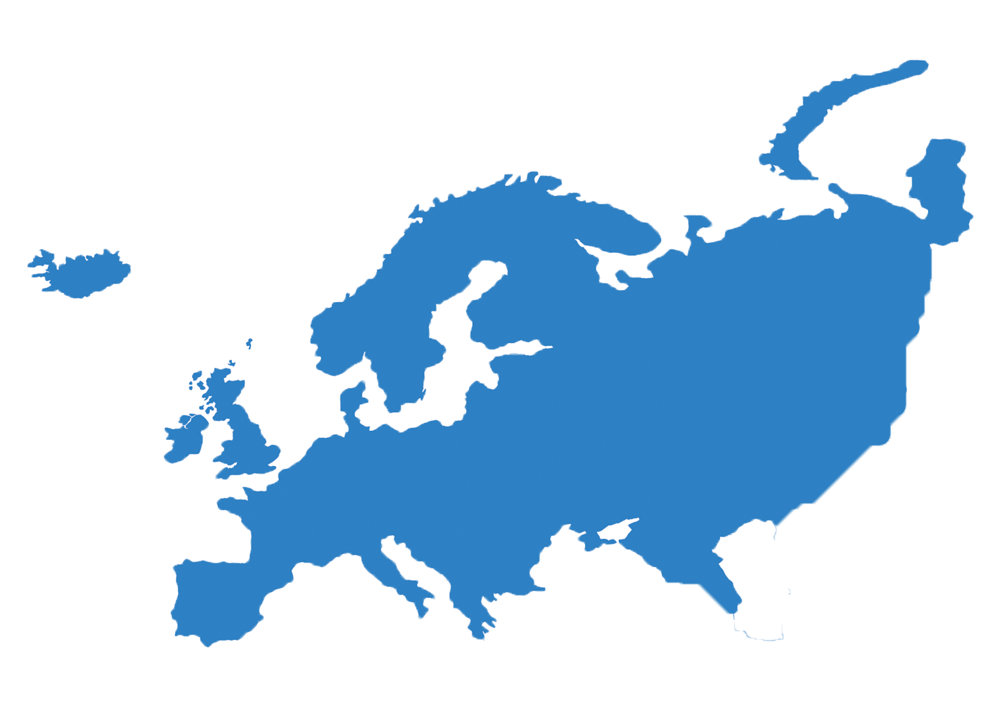

Europa
Países
São países do continente europeu: Albânia, Alemanha, Andorra, Armênia, Áustria, Azerbaijão, Bélgica, Bielorrússia, Bósnia e Herzegovina, Bulgária, Cazaquistão, República Checa, Chipre, Croácia, Dinamarca, Eslováquia, Eslovênia, Espanha, Estônia, Finlândia, França, Geórgia, Grécia, Hungria, República da Irlanda, Islândia, Itália, Kosovo, Letônia, Liechtenstein, Lituânia, Luxemburgo, Macedônia do Norte, Malta, Moldávia, Mônaco, Montenegro, Noruega, Países Baixos, Polônia, Portugal, Reino Unido, Romênia, Rússia, San Marin, Sérvia, Suécia, Suíça, Turquia e Ucrânia.
Economia
A Europa é o segundo menor continente do mundo e um dos mais ricos. A riqueza europeia tem sua origem na Primeira Revolução Industrial, ocorrida em meados do século XVIII, possibilitada principalmente pelas relações com as colônias africanas e americanas, pelo comércio com países asiáticos e pela presença de ferro e carvão em abundância no subsolo europeu. A UE hoje é a maior responsável pelo comércio global, detendo 16,4% de todas as transações de mercadorias no mundo.
Cultura
A Europa, de acordo com os aspectos físicos e sua formação geológica, é considerada por muitos cientistas como um continente que corresponde a uma península da Eurásia, essa significa a união da Ásia e a própria Europa, localizada no hemisfério norte. A Europa se constitui como continente em razão dos acontecimentos históricos, pois nesse território houve as principais dispersões culturais, políticas e econômicas, que expandiu sua influência em âmbito internacional.
Política
A política europeia lida com as relações sociais envolvendo política ou poder, que estão em constante estado de evolução no Velho Continente. Trata-se de um tópico muito mais intrincado do que em outros continentes devido a uma série de fatores, incluindo o longo histórico dos estados-nações da região, bem como pela crescente tendência moderna de um incremento da unidade política entre os estados europeus. A política atual da Europa pode ser traçada em retrospecto pelos eventos históricos ocorridos em seu interior.
Geografia
O clima predominante na Europa é o temperado, no qual pode ser observado variações continentais e oceânicas. Devido ao grande recorte do continente, a Europa é banhada por diversos mares. No continente também pode ser encontrado diversos rios, como o Danúbio, o Volga e o Rio Reno. O rio Volga é o maior da Europa. Por ser um território bastante heterogêneo, vários tipos de vegetação podem ser encontrados na Europa, como a Tundra, nas áreas de baixas temperaturas; a Floresta de Coníferas ou Taiga; a Floresta temperada, que é a vegetação predominante no continente, entre outros.
Curiosidades
- A Europa possui uma população de mais de 738 milhões de habitantes, distribuídos em seus 50 países e falando mais de 60 línguas, entre idiomas oficiais e dialetos.
- Segundo a classificação da ONU, a Europa possui 50 países.
- Desde 2002 a moeda Euro possui cotação superior ao Dólar.